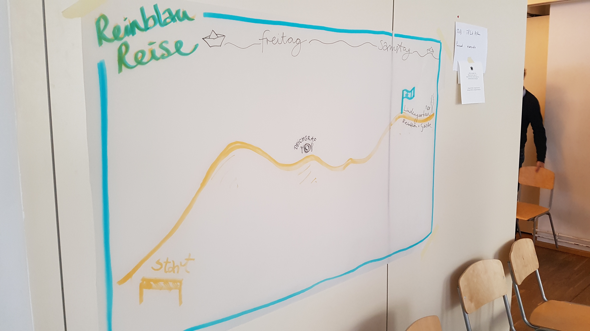
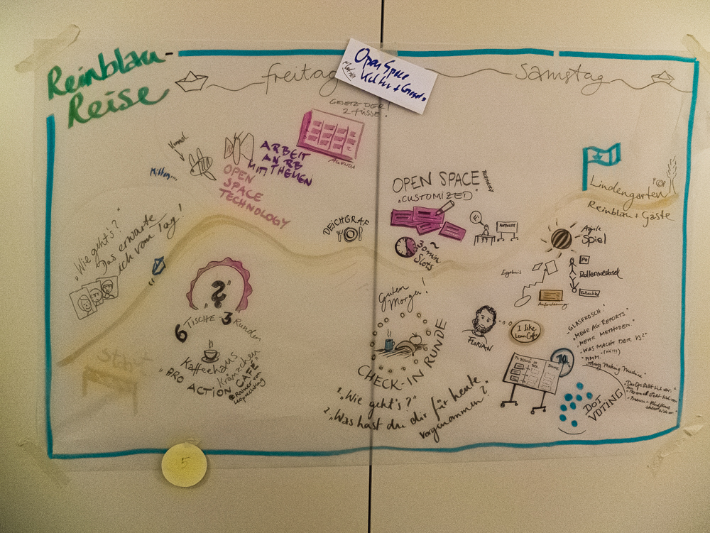

Genossenschaft
als Businessmodell für Freelancer
Luca Curella & Dietmar Gigler, Reinblau eG

Freelancer = Einzelkämpfer?

- „Alleskönner“ vs. Spezialisierung
- Fortbildungen auf eigene Kosten
- Preisdruck, Verantwortung
- Persönliches Risiko
Warum kooperieren?

- Teamarbeit, Verteilte Rollen, Vertretung möglich
- Gegenseitige Fortbildung und Unterstützung
- Geringeres persönliches Risiko
Wie kooperieren?
- GbR
- GmbH
- Genossenschaft
Die Genossenschaft
- Definierter Zweck ist der Nutzen für die Mitglieder
- Gleichberechtigte Mitbestimmung für alle Mitglieder
- Beschränkte Haftung (bei Ausschluss der Nachschusspflicht)
- Passendes Organisationsmodell für eine Community
Die Organe
- Der Vorstand
- Der Aufsichtsrat
- Die Mitgliederversammlung
Gründung einer Genossenschaft
- Die Satzung
- Der Businessplan
- Die Prüfung durch den Genossenschaftsverband
- Die Eintragung in das Genossenschaftsregister
Wie arbeiten in einer Genossenschaft?
Wie arbeiten wir?

- Agiles arbeiten in Projektteams
- Interne Strukturen ebenso agil wie möglich
- „Agil“: transparent für alle, im Team entscheiden, Fokus auf: machen, evaluieren, besser machen
Unsere Ziele
Selbstorganisierte Strukturen entwickeln
Mit externer Beratung Self-Management einführen
Tools und Methoden lernen für Workshops und Meetings

z. B. agiles Denken, User Story Mapping etc. in interne Prozesse einbeziehen, intern durchgeführte Workshops und Methoden bereichern wiederum Kundenprojekte (Methodenkoffer)
Transparente Rollen und Aufgaben entwickeln

https://glassfrog.holacracy.org/
Entscheidungsfindung

Mitsprache ermöglichen und trotzdem schnelle Entscheidungen treffen können
Kreativität statt Kontrolle fördern
Feiern
Danke!